정보보안기사 (2016-04-02 기출문제)
1과목: 시스템 보안
1. 아래 지문은 리눅스 시스템에서 명령어들을 수행한 결과이다. (가)에서 수행하면 실패하는 것은?
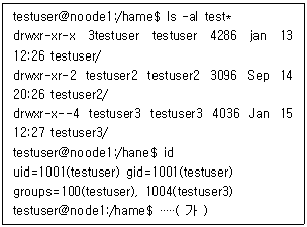
- ls testuser2
- cd testuser2
- cd testuser3
- ls testuser3
(정답률: 49%)

2. 다음 중 프로세스와 관련된 설명으로 가장 거리가 먼 것은?
- 프로세스는 프로세스 제어블록(PCB)으로 나타내며 운영체제가 프로세스에 대한 중요한 정보를 저장해 놓은 저장소를 의미한다.
- 하나의 포르세스는 생성, 실행, 준비, 대기, 보류, 교착, 종료의 상태 변화를 거치게 된다.
- 프로세스란 스스로 자원을 요청하고 이를 합당받아 사용하는 능동적인 개체를 의미한다.
- 스레드는 프로세스보다 큰 단위이며, 자원의 할당에는 관계하지 않고, 프로세서 스케줄링의 단위로써 사용하게 된다.
(정답률: 50%)
3. 다음 중 프로세스 스케줄링을 통한 CPU 성능요소가 아닌 것은?
- CPU 이용률(Utilization)
- 시스템처리율(Throughput)
- 대기시간(Waiting time)
- 확장성(Expansiblility)
(정답률: 78%)
4. 서버에 연결된 디스크가 여러 개의 배열로 구성되어 있을 때, 이를 안전하게 관리하기 위한 기술로서 RAID를 사용한다. 다음에 설명하는 각 RAID 레벨로서 옳은 것은?
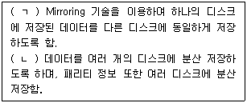
- (ㄱ) RAID-0, (ㄴ) RAID-1
- (ㄱ) RAID-1, (ㄴ) RAID-5
- (ㄱ) RAID-1, (ㄴ) RAID-4
- (ㄱ) RAID-1, (ㄴ) RAID-3
(정답률: 79%)
5. 리모트 컴퓨터로부터의 ping 명령에 대한 응답으로 "Destination Unreachable"을 되돌려 주고, 접속을 거절하기 위해 리눅스 방화벽에서 설정하는 타깃 명령어는 무엇인가?
- DROP
- DENY
- REJECT
- RETURN
(정답률: 55%)
6. 증거수집 대상 중 휘발성 데이터와 가장 거리가 먼 것은?
- 시간정보와 로그온 사용자 정보
- 이벤트 로그
- 클립보드 데이터
- 프로세스 정보
(정답률: 31%)
7. 다음은 트로이목마의 특징에 대한 설명이다. 성격이 가장 다른 하나는?
- 원격조정
- 시스템 파일 파괴
- 자기복제
- 데이터 유출
(정답률: 68%)
8. 재귀 함수의 종료 조건을 잘못 프로그래밍하여 재귀함수의 호출이 무한히 반복될 경우, 메모리의 어떤 영역에서 문제가 발생하는가?
- Text
- Data
- Heap
- Stack
(정답률: 74%)
9. 트로이목마 프로그램으로 사용자의 키보드 입력을 가로채는 목적으로 사용되기 때문에 이 프로그램이 동작하는 컴퓨터에서 입력되는 모든 것이 기록되어 개인정보 등이 도용당하게 되는 해킹기법은 무엇인가?
- 포트스캔
- 쿠키
- DoS
- 키로그
(정답률: 80%)
10. 리눅스 시스템의 커널에 내장된 툴로서 rule 기반의 패킷 필터링 기능, connection tracking 기능 등 다양한 기능을 제공하는 것은?
- TCP - Wrapper
- netcat
- iptables
- xinetd
(정답률: 47%)
11. 다음 중 Window OS에서 'ADMIN$'라는 공유자원의 공유를 제거하는 명령어로 옳은 것은?
- net share ADMIN$ /remove
- net share ADMIN$ /delete
- net user share ADMIN$ /remove
- net user share ADMIN$ /delete
(정답률: 55%)
12. 다음 중 취약점 점검과 가장 거리가 먼 보안 도구는?
- SATAN
- COPS
- Nmap
- Tripwire
(정답률: 52%)
13. 파일시스템 점검의 명령어는?
- chgrp
- mount
- fsck
- df
(정답률: 55%)
14. 윈도우에서 시스템의 전체적인 설정 정보를 담고 있는 레지스트리의 파일은 %SystemRoot%\config 디렉터리에 저장된다. 이곳에 저장되는 주요 레지스트리 파일에 대한 설명으로 옳지 않은 것은?
- SECURITY - 시스템의 보안과 권한 관련 정보
- SAM - 로컬 계정과 그룹 정보
- SOFTWARE - 시스템 부팅에 필요한 전역 설정 정보
- NTUSE DAT - 사용자별 설정 정보
(정답률: 58%)
15. UNIX 시스템에서 다음의 chmod 명령어 실행 후의 파일 test1의 허가비트(8진법 표현)는?
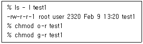
- 644
- 244
- 600
- 640
(정답률: 66%)
16. 중요한 시스템에 접근하는 공격자를 다른 곳으로 끌어내도록 설계한 유도 시스템은?
- Spoofing
- Honeypot
- Sniffing
- Switching
(정답률: 57%)
17. 다음 내용은 어느 공격기법에 관한 설명인가?
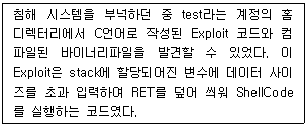
- Buffer Overflow
- Format String
- Race condition
- Brute force
(정답률: 77%)
18. Brute Force Attack 및 Dictionary Attack 등과 가장 거리가 먼 것은?
- John the Ripper
- L0phtcrack
- Pwdump
- WinNuke
(정답률: 43%)
19. 서버관리자를 위한 보안 지침 중 옳지 않은 것은?
- 관리자 그룹 사용자의 계정을 최소화한다.
- 정기적으로 파일과 디렉터리의 퍼미션을 점검한다.
- 관리자로 작업한 후에는 반드시 패스워드를 변경한다.
- 웹 서버에서 생성되는 프로세스는 관리자 권한으로 실행되지 않도록 한다.
(정답률: 60%)
20. 다음 중 리눅스 계정 관리 파일 /etc/shadow를 통해서 알 수 없는 것은 무엇인가?
- 사용자 계정 이름
- 암호화 또는 해시 알고리즘이 적용된 사용자 패스워드
- 사용자 패스워드 최소 길이
- 사용자 패스워드 만료일까지 남은 기간(일)
(정답률: 42%)
2과목: 네트워크 보안
21. 다음과 같은 기능을 수행하는 보안도구는 무엇인가?
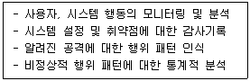
- 침입차단시스템
- 침입탐지시스템
- 가상사설망(VPN)
- 공개키기반구조(PKI)
(정답률: 50%)
22. 다음 중 UDP flooding 공격의 대응 방안으로 옳지 않은 것은
- 다른 네트워크로부터 자신의 네트워크로 들어오는 IP Broadcast 패킷을 받도록 설정한다.
- 사용하지 않는 UDP 서비스를 중지한다.
- 방화벽 등을 이용하여 패킷을 필터링한다.
- 리눅스 시스템인 경우 chargen 또는 echo 서비스를 중지한다.
(정답률: 50%)
23. 다음 중 침입탐지시스템의 특징으로 보기 어려운 것은?
- 외부로부터의 공격뿐만 아니라 내부자에 의한 해킹도 방어할 수 있다.
- 접속하는 IP 주소에 상관없이 침입을 탐지할 수 있다.
- 피캣의 유형에 따라 통과가 허용 또는 거부되는 패킷 필터링 기능을 제공한다.
- 침입 판단에 약간의 오류 가능성이 존재한다.
(정답률: 29%)
24. 다음은 DOS 창에서 어떤 명령어를 실행시킨 결과인가?
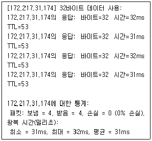
- ping
- traceroute
- date
- netstat
(정답률: 59%)
25. 다음에서 설명하는 네트워크는?
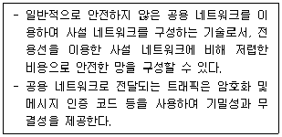
- LAN(Local Area Network0
- WAN(Wide Area Network)
- MAN(Metropolitan Area Network)
- VPN(Virtual Private Netowrk)
(정답률: 59%)
26. 다음 중 네트워크 기반 서비스 거부 공격이 아닌 것은?
- 버퍼 오버플로우(Buffer Overflow)
- 스머프(Smurf)
- SYN 플러딩(Flooding)
- 티어드랍(Teardrop)
(정답률: 48%)
27. 다음은 어떠한 형태의 공격에 대한 대비 또는 대응방법인가?
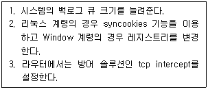
- Land Attack
- Smurf Attack
- Syn Flooding Attack
- Ping of Death Attack
(정답률: 44%)
28. VLAN에 대한 설명이다. 순서대로 나열한 것은?
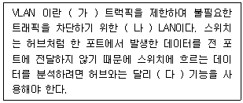
- (가) 멀티캐스팅, (나) 논리적인, (다) Port Mirroring
- (가) 브로드캐스팅, (나) 논리적인, (다) Port MIrroring
- (가) 브로드캐스팅, (나) 물리적인, (다) Port Filtering
- (가) 멀티캐스팅, (나) 물리적인, (다) Port filtering
(정답률: 72%)
29. DoS(Denial of Service) 공격의 일종으로 공격대상자는 스푸핑된 소스 IP로부터 ICMP reply를 동시에 수신하는 현상을 갖는 공격은 무엇인가?
- Ping of Death
- Smurf Attack
- TearDrop Attack
- Land Attack
(정답률: 46%)
30. 다음 중 가상 사설망(VPN) 구현 기술과 가장 거리가 먼 것은?
- 터널링
- 패킷 필터링
- 인증
- 암호화
(정답률: 50%)
31. 다음 설명에 적합한 방화벽의 구축 형태는?
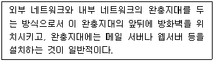
- Screened Host
- Screened Subnet
- Dual Homed Host
- Bastion Host
(정답률: 43%)
32. 침입차단시스템(Firewall)과 침입탐지시스템(DS)의 설명으로 부적합한 것은?
- Firewall의 종류에는 스크리닝 라우터 (Screening Router), 배스천 호스트(Bastion Host), 프락시 서버 게이트웨이(Proxy Server Gateway), Dual-Homed 게이트웨이 등이 있다.
- Firewall을 다중으로 사용 시，내부 인가자의 시스템 호 스트에 대한 접근통제가 기능하다.
- 오용탐지 IDS는 알려진 공격에 대한 Signature의 유지를 통해서만 탐지가 기능하다.
- IDS에서 공격인데도 공격이라고 판단하지 않는 경우를 False Negative라고 한다.
(정답률: 32%)
33. 다음 지문이 설명하고 있는 것은?
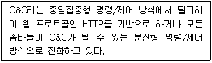
- Trojan Horse
- Botnet
- Backdoor
- Worm
(정답률: 65%)
34. 다음 설명 중 옳지 않은 것은?
- 브로드캐스트는 하나의 송신자가 같은 서브 네트워크 상의 모든 수신자에게 데이터를 전송히는 방식이다.
- 브로드캐스트 IP 주소는 호스트 필드의 비트값이 모두 1인 주소를 밀하며, 이러한 값을 갖는 IP 주소는 일반 호스트에 설정하여 널리 사용한다.
- 멀티캐스트 전송이 지원되면 데이터의 중복 전송으로 인한 네트워크 자원 낭비를 최소화 할 수 있게 된다.
- 유니캐스트는 네트워크상에서 단일 송신자와 단일 수신자 간의 통신이다
(정답률: 62%)
35. TCP 연결 2HS 중 3-way handshaking의 Half Open 연결 시도의 취약점을 이용한 공격은?
- Land 공격
- SYN Flooding 공격
- Smurf 공격
- Trinoo 공격
(정답률: 70%)
36. 침입차단시스템(Firewall)을 지나는 패킷에 대해 출발지와 목적지의 IP 주소 및 포트 번호를 특정주소 및 포트로 매핑 (Mapping》하는 기능을 무엇이라 하는가?
- Gateway
- Packet Filtering
- NAT(Network Address Translation)
- NAU(Network Address Unit)
(정답률: 40%)
37. 다음의 라우팅 프로토콜 중 AS 사이에 구동되는 라우팅 프로토콜은 무엇인가?
- OSPP
- RIP
- BGP
- IGRP
(정답률: 39%)
38. 다음 지문에서 설명하고 있는 스니핑 공격은?
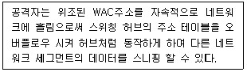
- ARP Redirect 공격
- ICMP Redirect 공격
- Switch Jamming 공격
- ARP Spoofing 공격
(정답률: 50%)
39. 다음은 특정 시스템에 대한 분류 또는 기능에 대한 정의이다. 특성이 다른 하나는 무엇인가?
- 단일 호스트 기반
- 네트워크 기반
- 배스천호스트
- 비정상적인 행위탐지
(정답률: 43%)
40. 침입차단시스템(Firewall)을 통과하는 모든 패킷을 침입차단시 스템에서 정의한 보안 정책에 따라 패킷의 통과 여부를 결정 하는 역할을 수행하는 기법은?
- Packet Filtering
- NAT(Network AddressTranslation)
- Proxy
- Logging
(정답률: 67%)
3과목: 어플리케이션 보안
41. 다음 중 공격기법과 그에 대한 설명으로 옳은 것은 무엇인가?
- Smurf Attack：IP Broadcast Address로 전송된 ICMP 패킷에 대해 응답하지 않도록 시스템을 설정하여 방어할 수 있다.
- Heap Spraying：아이디와 패스워드 같이 사용자의 입력이 요구되는 정보를 프로그램 소스에 기록하여 고정시키는 방식이다.
- Backdoor：조직 내에 신뢰할 만한 벌-신인으로 위장해 ID 및 패스워드 정보를 요구하는 공격이다.
- CSRF：다른 사람의 세션 싱채를 훔치거나 도용하여 액세스하는 해킹 기법을 말한다.
(정답률: 41%)
42. 웹페이지 입력화면 폼 작성 시 GET 방식을 사용할 경우 폼 데이터가 URL 뒤에 첨가되어 전송되며, 이 때문에 그 내용이 쉽게 노출되어 공격에 이용당할 수 있다. 어떤 공격이 이러한 약점을 이용할 수 있는가?
- XPath 삽입
- 크로스사이트 스크립트
- 크로스사이트 요청 위조
- 운영체제 명령어 삽입
(정답률: 34%)
43. 다음 보기 중 그 성질이 다른 것은?
- SQL Injection
- XSS or GSS(Cross site Scription)
- Cookie sniffing
- Whois
(정답률: 40%)
44. 다음 중 TFTP(Trivial File Transfer Protocol)에 대한 설명으로 틀린 것은?
- 하드디스크가 없는 장비들이 네트워크를 통해 부팅 할 수 있도록 제안된 프로토콜이다.
- UDP 69번을 사용하며 특별한 인증 절차가 없다,
- TFTP 서비스를 위한 별도의 계정 파일을 사용하지 않는다.
- 보안상 우수하여 Anonymous FTP 서비스를 대신하여 많이 사용한다.
(정답률: 31%)
45. 다음 중 버퍼 오버플로우(Buffer Overflow)에 대한 대책으로 옳지 않은 것은?
- 경계 검사를 하는 컴파일러 및 링크를 사용한다.
- 경계를 검사하는 함수를 사용한다.
- 운영체제 커널 패치를 실시한다.
- 최대 권한으로 프로그램을 실행한다.
(정답률: 64%)
46. 다음 중 PGP(Pretty Good Privacy)의 기능과 가장 거리가 먼 것은?
- 전자서명
- 권한 관리
- 압축
- 단편화와 재조립
(정답률: 32%)
47. 데이터베이스 복구를 위해 만들어지는 체크포인트에 대한 설명으로 가장 적절한 것은?
- 장애를 일으킨 트랜잭션들의 기록
- 데이터베이스 장애 발생 직전에 수행된 트랜잭션 기록
- 이미 처리된 트랜잭션 중 영구 저장장치에 반영되지 않은 부분
- 일정 시간 간격으로 만들어지는 DBMS의 현재 싱채에 대한 기록
(정답률: 25%)
48. DB의 보안유형과 가장 거리가 면 것은?
- DB 웹 서비스
- 허가 규칙
- 가상 테이블
- 암호화
(정답률: 30%)
49. 다음 중 SET(Secure Electronic Transaction) 프로토콜에 대한 설명으로 옳지 않은 것은?
- RSA를 시용함으로써 프로토콜의 속도를 크게 저하시킨다.
- 상점과 지불게이트웨이의 거래를 전자적으로 처리하기 위한 별도의 하드웨어와 소프트웨어를 요구하지 않는다.
- 암호프로토콜이 너무 복잡하다.
- 사용자에게 전자지갑 소프트웨어를 요구한다.
(정답률: 45%)
50. 다음 중 데이터베이스에 대한 보안 요구사항으로 가장 거리가 먼 것은?
- 데이터에 대한 추론통계 기능
- 데이터에 대한 흐름통제 기능
- 데이터에 대한 부인방지 기능
- 허가 받지 않은 사용자에 대한 접근통제기능
(정답률: 36%)
51. 다음 중 게시판의 글에 원본과 함께 악성코드를 삽입함으로써 글을 읽을 경우 악성코드가 실행되도록 하여 클라이언트의 정보를 유출하는 공격 기법은 무엇인가?
- 쿠키/세션 위조
- File Download
- SQL Injection
- Cross Site Scripting(XSS)
(정답률: 70%)
52. 다음 중 웹을 통한 sql injection 공격 방지 방법으로 가장 부적절한 것은?
- 원시 ODBC 에러를 사용자가 볼 수 없도록 코딩
- 데이터베이스 애플리케이션을 최소 권한으로의 구동
- 데이터베이스 확장 프로시저 사용
- 테이블 이름，컬럼 이름, sql 구조 등이 외부 HTML에 포 함되어 나타나지 않도록 설정
(정답률: 52%)
53. 다음 SSL에 대한 설명 중 틀린 것은?
- SSL은 SSL Handshake Protocol, SSL change Cipher Spec, SSL Alert Protocol 부분파 실질적인 보안 서비스를 제공하는 SSL Record Protocol 부분으로 나누어져 있다,
- SSL은 상호인증과 무결성을 위한 메시지 코드기밀성을 위한 암호화 방법을 제공한다.
- 실제 SSL Record Protocol부분은 TCP 계층 하단에서 동작한다.
- SSL에서는 전자서명과 키 교흰을 위해 RSA 또는 디피헬만 알고리즘을 이용할 수 있다.
(정답률: 40%)
54. 다음 지문에서 설명하고 있는 보안 기술은 무엇인가?
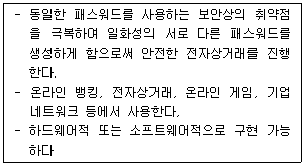
- 스마트 토큰
- One-Time Pad
- One-Time Password
- 보안카드
(정답률: 77%)
55. TLS(Transport Layer Security)의 기본 구조에서 그 구성 요소가 아닌 것은 무엇인가?
- Handshake Protocol
- Http protocol
- Alert Protocol
- Record Protocol
(정답률: 58%)
56. 다음 중 생체 인증 시스템의 요구사항이 아닌 것은?
- 유일성
- 영속성
- 정량성
- 가변성
(정답률: 64%)
57. 다음 중 프로그래머의 관점에서 버퍼 오버플로우 공격에 취약하지 않도록 사용 자제를 권고하는 함수는 무엇인가?
- sprintf()
- strncpy()
- fgets()
- strncat()
(정답률: 43%)
58. 웹 응용프로그램에서 사용자로부터의 입력 문자열을 처리하기 전에 <，>, &，” 등의 문자를 문자 변환함수 등을 사용하여 <, >, &, " 등으로 치환하는 것은 어떤 공격에 대비하기 위한 대응책인가?
- 크로스사이트 스크립트
- SQL 삽입
- 버퍼 오버플로우
- 경쟁 조건
(정답률: 45%)
59. 디지털 워터마킹 기술의 응용 분야와 거리가 먼 것은?
- 저작권 보호
- 이미지 인증
- 데이터 은닉
- 도청 방지
(정답률: 45%)
60. 전자지불 시스템의 기술 요건이 아닌 것은?
- 거래 상대방의 신원 확인
- 전송 내용의 비밀 유지
- 전자문서의 위조 및 부인 방지
- 전자지불의 추적 기능성
(정답률: 40%)
4과목: 정보 보안 일반
61. 무결성 레벨에 따라서 정보에 대한 접근을 제어하는 접근통제 모델은 무엇인가?
- 비바(biba) 모델
- 벨-라파둘라(Bell-Lapadula) 모델
- 클락-월슨(Clark -Wilson) 모델
- 비선형 모델 (Non-linear) 모델
(정답률: 45%)
62. 대칭키 암호시스템에 대한 설명으로 가장 적절하지 않은 것은?
- 제3자에게 키가 누설될 가능성이 항상 존재한다.
- 사전에 키 공유가 필요하다.
- 공개키 암호시스템에 비해 상대적으로 속도가 빠르다.
- 수학적으로 어려운 문제에 기반을 두고 있다.
(정답률: 45%)
63. 사용자 A가 서명자 B에게 자신의 메시지를 보여 주지 않고 서명을 받는 방법으로서 이용자의 프라이버시를 보호하기 위해 전자 화폐나 전자 투표에 활용되는 서명 방식은?
- 은닉 서명 (blind signature)
- 그룹 서명 (group signature)
- 수신자 지정 서명 (nominative signature)
- 부인 방지 서명(undeniable signature)
(정답률: 63%)
64. 다음은 IDEA에 대한 설명이다. 잘못된 것은 어느 것인가?
- IDEA는 DES를 대체하기 위해서 스위스에서 개발한 것이다.
- IDEA는 128비트 키를 사용하여 128비트 블록을 암호화 한다.
- IDEA는 하나의 블록을 4개의 서브 블록으로 나눈다.
- 4개의 서브 블록은 각 라운드에 입력값으로 들어가며 총 8개의 라운드로 구성되어 있다.
(정답률: 46%)
65. 다음 중 AES 알고리즘의 설명 중 틀린 것은?
- 128비트，192비트，256비트의 키 단위로 암호화를 수행 할 수 있다.
- 마지막을 뺀 각 라운드는 바이트 대치，행 옮김, 열 조합, 라운드 키 XOR로 구성된다.
- 마지막 라운드에서는 열 조합 연산을 수행하지 않는다.
- AES는 페이스텔 구조이기 때문에 복호화 과정은 암호화 과정과 같다.
(정답률: 57%)
66. 임의적 접근통제 방식에 대한 설명 중 옳지 않은 것은?
- 개별 주체와 객체 딘-위로 접근 권한 설정
- 객체의 소유주가 주체와 객체 간의 접근 통제 관재를 정의
- 접근 통제 목록(AGL : Access Control List)을 통해 구현
- 중앙집중적으로 통제되는 환경에 적합
(정답률: 59%)
67. 일방향 해시함수를 이용했을 때 제공되는 가장 효과적인 보안서비스는?
- 무결성
- 기밀성
- 부인방지
- 인증
(정답률: 38%)
68. 해시 함수에 대한 다음 설명 중 잘못된 것은?
- 해시 함수는 디지털 서명에 이용되어 데이터 무결성을 제공한다.
- 해시 함수는 임의의 길이를 갖는 메시지를 입력으로 하여 고정된 길이의 출력값을 갖는다.
- 블록 암호를 이용한 해시 함수의 설계가 가능하다.
- 해시 함수는 안전성을 위해서 키의 길이를 적절히 조정해야 한다.
(정답률: 14%)
69. MAC 접근정책에 대한 설명으로서 옳지 않은 것은?
- 접근 규칙 수가 적어 통제가 용이
- 보안관리자 주도하에 중앙 집중적 관리가 가능
- 개별 객체에 대해 접근 가능한 주체 설정
- 사용자와 데이터는 보안 취급허가를 부여 받아 적용
(정답률: 36%)
70. 사용자 인증에 사용되는 기술이 아닌 것은?
- Snort
- OTP(One Time Password)
- SSO(Single Sign On)
- 스마트 카드
(정답률: 67%)
71. 다음 중 공개키 기반으로 대칭키를 공유할 수 있는 Diffie-Heilman 프로토콜에서 발생할 수 있는 보안 공격에 해당하는 것은 무엇인가?
- 재전송(Replay) 공격
- 중간자(Man-In-The-Middle) 공격
- 반사(Reflection) 공격
- 위장(Impersonation) 공격
(정답률: 76%)
72. 키 분배 문제를 해결할 수 있는 방법에 해당하지 않는 것은?
- 키 배포 센터에 의한 해결
- Diffie-Hellman 키 교환 방법에 의한 해결
- 전자서명에 의한 해결
- 공개키 암호에 의한 해결
(정답률: 54%)
73. 암호해독의 목적과 가장 거리가 먼 것은?
- 암호에 사용된 키를 찾아내려는 시도
- 암호문으로부터 평문을 복원하는 시도
- 암호 알고리즘의 구조를 알아내려는 시도
- 암호시스템의 안정성을 정량적으로 측정하려는 시도
(정답률: 58%)
74. 메시지 출처 인증기술의 요소기술 중 하나인 해시(Hash) 함수의 특징으로 옳지 않은 것은?
- Message Autkentication Code와는 달리 키를 사용하지 않는다.
- 메시지 길이에 상관없이 적용 기능하다.
- 생성되는 해시 코드(Hash code)의 길이는 가변적이다,
- 일방향(one-way)으로 변환이 이루어진다.
(정답률: 57%)
75. 다음에서 설명하는 키 교환 알고리즘은?
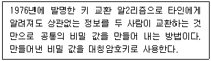
- PK1
- Rabin
- RSA
- Diffie-Hellman
(정답률: 38%)
76. 사용자가 알고 있는 지식, 예를 들면 아이디, 패스워드，신용 카드에 대한 개인식별번호 등의 지식을 기초로 접근제어를 수행하는 사용자 인증기법은 무엇인가?
- 지식 기반 사용자 인증기법
- 소유 기반 사용자 인증기법
- 생체 기반 사용자 인증기법
- 혼합형 사용자 인증기법
(정답률: 67%)
77. 다음은 X.509 인증서 폐지에 관련된 설명이다. 틀린 설명은?
- 인증서 폐지 메커니즘 : X.509에 정의된 인증서 폐지목록 (CRL) 으로 관리
- 페지 사유：인증서 발행 조직 탈퇴，개인키의 손상, 개인 키의 유출 의심
- 인증서 폐지 요청 : 인증서 소유자 또는 인증서 소유자의 대리인이 요청
- 폐지된 인증서 : 목록을 비공개하고 디렉터리에만 보관
(정답률: 53%)
78. AES 알고리즘에 대한 설명으로 옳지 않은 것은?
- 키의 길이에 따라 라운드 수가 달라진다.
- 블록 길이가 128비트인 대칭키 블록 암호 알고리즘이다,
- 페이스델 구조를 기반으로 알고리즘이 작동한다.
- DES 알고리즘을 대신하는 새로운 표준이다.
(정답률: 40%)
79. 전자인증 방식의 하나인 Password 방식의 문제점으로 옳지 않은 것을 고르시오.
- 패스워드 전송 노출
- 패스워드 재전송
- 별도의 키 분배 방식 필요
- 클라이언트 인증 정보 공격
(정답률: 16%)
80. 다음 중 전자 서명 생성에 적용 가능한 공개키 알고리즘이 아닌 것은?
- RSA
- AES
- DSA
- Rabin
(정답률: 44%)
5과목: 정보보안 관리 및 법규
81. 아래 지문은 보안 서비스 중 어느 항목을 나타내는 것인가?
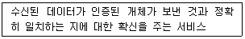
- 데이터 기밀성
- 데이터 무결성
- 부인봉쇄
- 가용성
(정답률: 45%)
82. 다음 중 정보통신기반보호법에서 정의하는 주요 정보통신기반시설에 대한 취약점 분석 평가를 수행할 수 있는 기관이 아닌 것은?
- 한국인터넷진흥원
- 정보보호 전문서비스 기업
- 한국전자통신연구원
- 한국정보화진흥원
(정답률: 37%)
83. 다음 중「정보통신기반보호법」에 의거하여 국가사회적으로 중대한 영향을 미치는 주요정보통신기반시설이 아닌 것은?
- 방송중계, 국가지도통신망 시설
- 인터넷포털, 전자상거래업체 등 주요 정보통신시설
- 도로, 철도, 지하철, 공항, 항만 등 주요 교통시설
- 전력, 가스，석유 등 에너지. 수자원 시설
(정답률: 50%)
84. 정보통신기반보호법상 중앙행정기관의 장은 소관분야의 정보통신기반시설 중 전자적 침해행위로부터의 보호가 필요하다고 인정되는 정보통신기반시설을 주요정보통신기반시설로 지정할 수 있는데, 이 경우에 고려할 사항으로 명시되지 않은 것은?
- 당해정보통신기반시설을 관리하는 기관이 수행하는 업무의 국가 사회직 중요성
- 침해사고가 발생할 경우 국제적으로 미칠 수 있는 피해의 범위
- 다른 정보통신기반시설과의 상호 연계성
- 침해사고의 발생가능성 또는 그 복구의 용이성
(정답률: 25%)
85. 정보통신기반보호법 제10조 보호지침에 의하면 관계중앙행정기관의 장은 소관분야의 주요정보통신기반시설에 대하여 보호지침을 제정하고 해당분야의 ( )에게 이를 지키도록 ( ) 할 수 있다. ( ) 속에 들어갈 말을 순서대로 열거한 것은?
- 관리기관의 장, 권고
- 관리기관의 장, 명령
- 관리기관의 장, 요청
- 사업자, 권고
(정답률: 36%)
86. 다음 중 위험관리 방법론과 가장 거리가 먼 것은?
- 국내 ISMS 인증체제
- ISO/IEC 27001
- ISO/IEC TR 13335-3
- ISO/IEC 15408
(정답률: 7%)
87. 주요정보통신기반시설 관리기관의 복무가 아닌 것은?
- 정기적인 취약점 분석, 평가
- 관계행정기관 또는 한국인터넷진흥원에 대한 침해사고 사실 통지
- 주요정보통신기반시설 보호대책 수립, 시행
- 주요정보통신기반시설 보호대책을 수립하여 기반보호위원회에 상정
(정답률: 26%)
88. 다음의 지문은 무엇에 대한 설명인가?
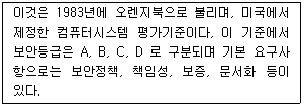
- ITSEC
- TCSEC
- CC
- K Series
(정답률: 23%)
89. 다음 지문을 모두 만족하는 기관은?
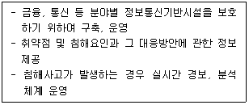
- 정보공유 분석센터
- 한국인터넷진흥원
- 관리기관
- 정보보호 전문서비스 기업
(정답률: 16%)
90. 다음은 개인정보의 수집 이용에 대한 사항이다. 동의를 받아 야 할 항목만을 모두 고른 것은?
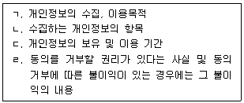
- ㄱ, ㄴ
- ㄴ, ㄷ, ㄹ
- ㄱ, ㄷ, ㄹ
- ㄱ, ㄴ, ㄷ, ㄹ
(정답률: 60%)
91. 다음 중 현행「전사서명법」상 공인인증기관이 발행한 공인인증서의 효력이 소멸하게 되는 사유에 해당하지 않는 것은?
- 인증업무의 정지명령에 위반하여 인증업무를 정지하지 아니한 공인인증기관에 대한 지정을 취소한 경우
- 전자서명 생성키가 분실, 훼손되었음을 통보받은 힌국인터 넷진흥원이 공인인증기관에게 발급한 인증서를 폐지한 경우
- 가입자 또는 그 대리인의 신청에 의하여 공인인증서의 효력이 정지된 경우
- 가입자가 사위 기타 부정한 방법으로 공인인증서를 발급 받은 사실을 인지한 공인인증기관이 해당 공인인증서를 폐지한 경우
(정답률: 18%)
92. 다음 중 개인정보 파기와 관련하여 잘못된 것은?
- 타 법령에 따라 보존해야 하는 경우에는 예외적으로 개인 정보를 파기하지 않고 다른 개인정보와 함께 저장, 관리할 수 있다.
- 개인정보를 수집할 때 동의 받았던 보유기간이 경과한 경 우에 지체 없이 파기해야 한다.
- 하드디스크 등 매체에 전자기적으로 기록된 개인정보는 물 리적인 방법으로 매체를 파괴하여 복구할 수 없도록 한다.
- 이미 요금정산이 끝난 소비자의 개인정보는 채권 소멸기간까지 남아있다고 하더라도 개인정보를 보관할 수 없다.
(정답률: 26%)
93. 다음 중 우I험도 산정 시 고려할 구성요소가 아닌 것은?
- 자산 (Asset)
- 위협 (Threat)
- 취약성 (Vulnerability)
- 직원(Employee)
(정답률: 45%)
94. 다음은 '전자서명법'에서 공인인증기관의 업무수행에 관한 조항이다. 괄호 안에 들어갈 말은?
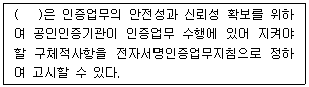
- 미래창조과학부장관
- 개인정보보호위원장
- 국가정보원장
- 산업통상자원부장관
(정답률: 20%)
95. 위험분석 방법론은 통상적으로 정량적 위험분석과 정성적 위험분석으로 분류된다. 다음 중 정량적 위험분석 방법이 아닌 것은?
- 연간예상손실 계산법
- 과거 통계자료 분석법
- 수학공식 접근법
- 시나리오 기반 분석법
(정답률: 52%)
96. 다음 중「정보통신망 이용촉진 및 정보보호 등에 관한 법류」 제 47조의 정보보호 관리체계의 인증 제도에 대한 설명으로 옳지 않은 것은?
- 정보보호 관리체계 인증의 유효기간은 3년이다.
- 정보보호 관리체계 인증은 의무 대상자는 반드시 인증을 받아 야 하며 의무 대상자가 아닌 경우에도 인증을 취득할 수 있다.
- 정보보호 관리체계는 정보통신망의 안정성, 신뢰성 확보 를 위하여 관리적, 기술적, 물리적 보호조치를 포함한 종합적 관리체계를 의미한다.
- 정보보호 관리체계 의무대상자는 국제표준 정보보호 인증을 받거나 정보보호 조치를 취한 경우에는 인증 심사의 전부를 생략할 수 있다.
(정답률: 37%)
97. 다옴 설명에 해당하는 OECD 개인정보보호 8원칙으로 옳은 것은?
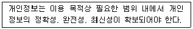
- 이용 제한의 원칙(Use Limitation Principle)
- 정보 정확성의 원칙(Data Quality Principle)
- 안전성 확보의 원칙(Security Safeguards Principle)
- 목적 명시의 원칙(Purpose Specification Principle)
(정답률: 33%)
98. 다음 중 주요정보통신기반시설의 보호 및 침해사고의 대응 을 위한 주요정보통신기반시설 보호지침의 내용에 일반적으로 포함되는 내용과 가장 거리가 먼 것은?
- 시스템 개발 관리
- 정보보호체계 괸리 및 운영
- 침해사고 대웅 및 복구
- 취약점 분석, 평가 및 침해사고 예방
(정답률: 52%)
99. 개인정보보호법상 자신의 개인정보 처리와 관련한 정보주체 의 권리에 대한 설명으로 옳지 않은 것은?
- 개인정보의 처리에 관한 정보를 제공받을 수 있다.
- 개인정보의 처리에 관한 동의 여부, 동의 범위 등을 선택하고 결정할 수 있다.
- 개인정보의 처리로 인하여 발생한 피해를 신속하고 공정한 절차에 따라 구제받을 수 있다.
- 개인정보에 대하여 열람을 할 수 있으나, 사본의 발급은 요구할 수 없다.
(정답률: 37%)
100. 다음 중「전자서명법」에 의거하여 공인인증 기관이 발급하는 공인인증서에 포함되는 사항이 아닌 것은?
- 가입자와 공인인증기관이 이용하는 전자인증 방식
- 공인인증서의 일련번호
- 공인인증기관의 명칭 등 공인인증기관임을 확인할 수 있는 정보
- 공인인증서의 이용범위 또는 용도를 제한하는 경우 이에 관한 사항
(정답률: 27%)
이유: 현재 디렉토리에서 "testuser3" 디렉토리가 없기 때문에 해당 명령어는 실패한다.
"ls testuser2"는 현재 디렉토리에 있는 파일과 디렉토리 중 "testuser2"라는 이름을 가진 디렉토리를 출력한다.
"cd testuser2"는 현재 디렉토리를 "testuser2" 디렉토리로 변경한다.
"cd testuser3"은 "testuser3" 디렉토리로 이동하려는 명령어이지만, 현재 디렉토리에는 "testuser3" 디렉토리가 없기 때문에 실패한다.
"ls testuser3"은 현재 디렉토리에 있는 파일과 디렉토리 중 "testuser3"라는 이름을 가진 디렉토리를 출력한다.